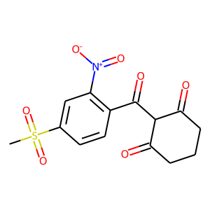

Overview of Engineering Task
Contents
Abstract
Global agriculture relies heavily on herbicides use to minimize yeild loss due to weeds, which can be significant. An issue is that no new herbicide classes have been discovered in decades, which coupled with frequent outbreaks of herbicide resistant weeds leaves an un-met demand for more effective weed control technology. Engineered herbicide resistant crops are an effective solution to this problem since they allow farmers flexibility in their herbicide application programs, minimizing the risk of a resistance outbreak. Their widespread adoption would also enable development of badly needed new herbicide chemistries.
Herbicide resistance can be engineered by augmentation of the metabolic pathways affected by the herbicide (metabolic bypassing) or by inserting herbicide detoxification machinery. The latter can require enzyme engineering, which is the focus of this project.
The goal of this project is to develop enzymes to initiate detoxification of the herbicide mesotrione, which belongs to an important class of herbicides that inhibit 4-HPPD.
To do this, two enzyme engineering techniques are developed and deployed.
One technique relies on virtual directed evolution - using automated cycles of protein structure-prediction, molecular docking and mutation by a genetic algorithm. Thousands of mutants are screened virtually and several candidates are generated for lab testing. Lab tests on the candidates show : …
The other technique relies on a machine learning model that maps protein sequence to substrate specificty, which can evaluate a large number of sequences quickly. The model in combination with a sequence optimization algorithm can generate candidates for lab testing. The model, trained on in-house P450-ligand screening data can also plan subsequent rounds of screening based on its uncertainty and the expected information gain of a particular experiment.
|  | Mesotrione, the detoxification target for this work, is a 4-HPPD inhibitor representative of the triketone class of HPPD inhibitor. |
Problem Context
Herbice detoxification in plants is typically initiated by a ring carbon hydroxylation by a cytochrome P450 before conjugation with glutathione by a glutathione S-transferase (GST) and sequestration into a vacuole by an ABC transporter. GSTs can be promiscuous so it may be sufficient to introduce an engineered cytochrome P450 capable of mesotrione ring hydroxylation to render a crop herbicide tolerant. Therefore the aim of the project is to engineer a cytochrome P450 capable of a non-site specific ring hydroxylation of mesotrione.
A promising template is the cytochrome P450 BM3 from Bacillus megatarium, which has been extensively studied, characterized and engineered for non-natural activity. BM3 has the fastest reaction rates of any P450 towards its presumed natural substrate, arachadionic acid, at 17000 MS-1 because it is naturally fused to its reductase domain. This, combined with its ease of expression, broad engineered substrate scope and tolerance to mutations makes BM3 a suitable template for engineering a herbicide detoxification system.
Pilot studies indicate that neither the wild-type or the promiscuous A82F/F87V mutant have binding activity towards mesotrione.
Resources Available
Candidate solutions were devised within the constraints of the resources available. The resources included that necesseray to perform a high throughput screen of P450 ligand binding and the compute necesseray to build a large neural model of sequence-substrate specificty, and to run rounds of virtual directed evolution.
Screening Equipment
Screening equipment available included:
- Labcyte Echo - an acoustic liquid handling system that can dispense small volumes plate-to-plate with 2.5 nl precision. Various models exist and all can follow arbitary dispensing instructions from a
csvfile. - Thermo-Fisher Multidrop - a bulk liquid dispensing system for transfer of a liquid to a microplate with speed and precision.
- BMG FluoStar Plate Readers - micro plate readers that can measure the UV/visibile light absorbance between 300 and 800 nm in transparent plates.
Compute
- CPUs
- GPUs
Proposed Solutions
Two techniques are developed and field tested in this work.
One is computer program (reffered to here as evo) which simulates directed evolution by cycles of structure prediction ligand docking and mutation, directed by a genetic algorithm.
The other aims to map P450 sequence to substrate specificty with a machine learning model that directs an enzyme-ligand screening program in the lab by active learning.
Once confident in its predictions, the model can evaluate candidate protein sequences proposed by a sequence optimization algorithm to generate BM3 mutants for lab testing.
This approach is asigned the moniker rio.